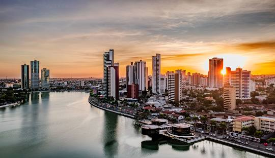
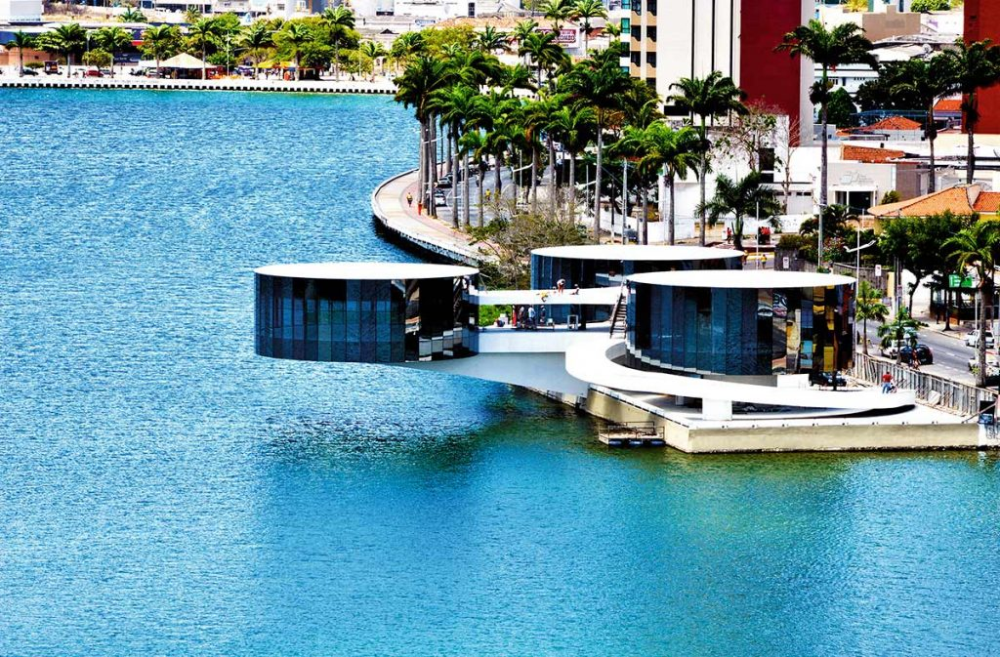

Campina Grande
do estado da ParaíbaEscolhi criar essa página pra falar sobre um dos cartões postais da minha cidade natal conhecida como a "Rainha da Borborema" e detentora de uma das maiores festas de São João do país.
Com a vibrante paisagem urbana ao redor, este espaço proporciona uma experiência de lazer e bem-estar, nos convidando para caminhadas de contemplação.
É o principal cartão postal da cidade, um cenário para eventos, encontros e a vida diária. É adornado por monumentos que contam a saga dos Pioneiros da Borborema, além das estátuas de ícones da música nordestina, Luiz Gonzaga e Jackson do Pandeiro.
Localizado às margens do Açude Velho, as três estruturas em forma de pandeiro que compõem o museu não são apenas elementos arquitetônicos; são um convite à celebração da música e da festividade que permeiam a cultura local.
“Campina Grande não é apenas um lugar, é um estado de espírito, onde a tradição e o futuro dançam juntos.”
- Fundação: 1864
- Tipo: Metrópole Regional
- População: ~420 mil
- Eventos Anuais: São João, Salão do Artesanato
- Polo: Tecnológico, Universitário
- Economia: Comércio, Serviços, Tecnologia
A cidade, além de seu famoso São João, é um polo universitário e tecnológico, abrigando instituições de ensino renomadas e um crescente ecossistema de startups. Sua influência se estende por toda a Paraíba e estados vizinhos, consolidando-a como um importante motor econômico e social do Nordeste brasileiro.
Sua população ativa e seu dinamismo econômico a colocam entre as maiores e mais importantes cidades do interior do Brasil. Embora não seja uma capital, Campina Grande exerce um papel estratégico que muitas vezes supera cidades maiores.